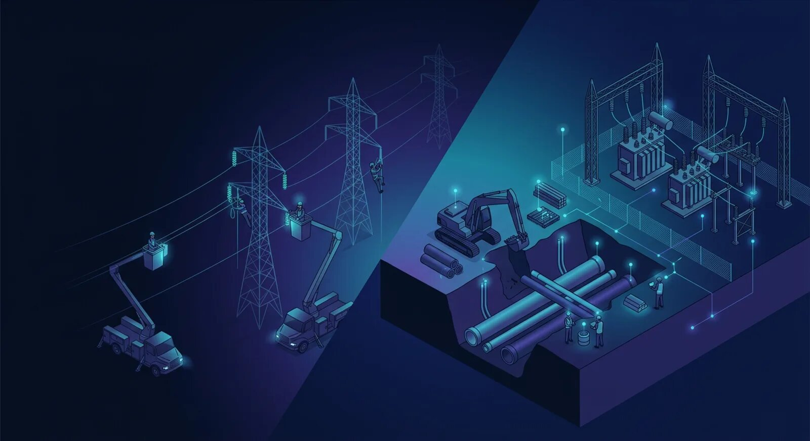

AI and IoT applications for power lines, pipelines, substations, and underground utility operations using RFID, BLE, GPS, and LoRaWAN.

Utility construction organizations execute a wide range of projects that differ in location, workforce size, equipment requirements, construction methods, regulatory obligations, and project duration. Whether constructing high-voltage transmission lines, installing underground pipelines, expanding electrical substations, or completing horizontal directional drilling beneath existing infrastructure, project success depends upon reliable workforce coordination, controlled site access, asset accountability, inventory visibility, work package management, and installation traceability.
UtilCon AI delivers AI and IoT solutions designed specifically for utility construction environments where identification and location technologies improve operational visibility throughout the construction lifecycle. RFID identification, BLE technologies, GPS fleet tracking, and long-range wireless communications work together to support field operations while securely integrating with engineering, project management, GIS, ERP, document management, and compliance software.
Artificial Intelligence of Things, commonly called AIoT or AI and IoT, combines artificial intelligence with connected industrial devices, machine learning, Edge AI, computer vision where appropriate, and enterprise software. Within utility construction, AIoT transforms identification records collected from RFID readers, BLE devices, GPS trackers, and communication equipment into actionable operational information supporting workforce management, asset identification, inventory administration, work progress documentation, and infrastructure traceability.
This page presents representative deployment scenarios demonstrating how AI and IoT technologies support common utility construction project types throughout the construction industry.
Utility construction projects frequently involve geographically dispersed work areas, multiple contractors, temporary construction compounds, mobile equipment fleets, and continuously changing work zones. Identification and location technologies help maintain consistent operational awareness without disrupting established construction processes.
Typical application areas include:
Although each project presents unique operational requirements, AI and IoT solutions consistently support secure workforce identification, asset visibility, inventory control, work documentation, and construction traceability.
Construction of overhead electrical transmission and distribution systems involves large geographic work areas where utility poles, lattice towers, conductor reels, insulators, transformers, construction equipment, and mobile crews are continuously relocated as installation progresses. Activities typically extend across utility easements, rural rights-of-way, mountainous terrain, and urban environments, requiring careful coordination between engineering teams, field supervisors, logistics personnel, safety officers, and contractors.
UtilCon AI supports these operations through AI and IoT identification and location solutions that improve operational visibility while integrating with enterprise project management software.
Typical identification targets include:
RFID technologies provide persistent digital identification for workforce members and infrastructure components throughout transportation, storage, installation, inspection, and commissioning. BLE technologies assist with workforce location awareness around controlled work zones and temporary construction compounds, while GPS tracking supports fleet coordination across extensive transmission corridors.
Project managers can use validated identification records to improve:
These workflows help reduce manual recordkeeping while supporting engineering documentation and project reporting throughout transmission line construction.
A typical AI and IoT deployment for overhead transmission projects follows a structured operational workflow that connects field activities with enterprise software.
The workflow commonly includes:
This integrated approach enables engineering, logistics, and project management teams to access current information throughout the construction lifecycle.
Underground pipeline construction requires careful coordination between excavation crews, directional drilling teams, pipe installation specialists, welding crews, inspection personnel, and restoration contractors. Projects frequently extend across highways, municipal utility corridors, agricultural land, industrial facilities, and environmentally sensitive rights-of-way where maintaining accurate identification records is essential throughout every construction phase.
UtilCon AI supports pipeline trenching operations using AI and IoT identification and location solutions that improve workforce visibility, material accountability, equipment coordination, inventory administration, work package verification, and installation traceability. The emphasis remains on reliable identification rather than environmental sensing.
Typical construction assets requiring identification include:
RFID technologies assign unique digital identities to pipeline materials before installation, helping construction teams maintain consistent records as components move between fabrication facilities, staging yards, transportation vehicles, and active trenching operations.
BLE technologies support workforce coordination around excavation zones, pipe laydown areas, and contractor compounds, while GPS tracking improves visibility of construction fleets operating across distributed pipeline routes.
Project teams benefit from improved:
Reliable identification workflows reduce administrative effort while supporting engineering reviews, inspection activities, and infrastructure documentation after project completion.
A representative AI and IoT workflow for underground pipeline projects includes:
This workflow supports engineering teams, inspectors, logistics coordinators, and project managers by providing verified identification records throughout the pipeline construction lifecycle.
Electrical substation construction involves assembling complex infrastructure within controlled work environments. Construction activities include installation of transformers, switchgear, structural steel, protection systems, cable trenches, control buildings, and electrical equipment delivered from multiple suppliers.
Substation projects require careful coordination between civil contractors, electrical contractors, commissioning specialists, engineering personnel, logistics coordinators, and quality assurance teams.
UtilCon AI supports substation construction using AI and IoT technologies that strengthen workforce identification, controlled access, equipment accountability, inventory management, and installation documentation.
Typical identification targets include:
RFID identification enables each major asset and workforce member to maintain a unique digital identity throughout transportation, storage, installation, commissioning, and final project documentation.
BLE technologies help coordinate personnel movement within designated work areas while GPS tracking provides visibility of heavy equipment supporting construction activities.
Operational advantages include:
These capabilities support engineering reviews, commissioning activities, regulatory documentation, and future maintenance planning.
Substation construction typically progresses through multiple phases requiring continuous coordination among specialized construction teams.
AI and IoT integration supports:
Reliable identification and location workflows help reduce duplicate recordkeeping while maintaining consistent operational visibility throughout every construction phase.
Horizontal Directional Drilling (HDD), directional boring, and underground utility boring are widely used when installing electrical conduits, fiber optic infrastructure, water pipelines, gas distribution lines, and communication networks beneath highways, rail corridors, rivers, developed urban areas, and environmentally sensitive locations. These projects involve highly mobile drilling crews, specialized equipment, temporary staging areas, and continuously changing work zones that require reliable workforce coordination and asset accountability.
UtilCon AI supports underground utility boring operations using AI and IoT identification and location solutions designed to improve workforce identification, contractor access management, equipment visibility, inventory administration, work package verification, and installation traceability throughout every stage of construction.
Typical assets identified during underground boring projects include:
RFID technologies provide permanent digital identities for equipment, materials, and workforce members, while BLE technologies improve workforce awareness within designated work zones. GPS tracking supports visibility of mobile drilling equipment, supervisor vehicles, and material transportation across distributed construction locations.
Typical operational benefits include:
These workflows help engineering teams maintain organized project documentation while supporting inspections, commissioning, and long-term infrastructure maintenance.
Utility construction programs require continuous coordination between multiple contractors, engineering disciplines, logistics personnel, equipment operators, inspectors, and project managers. Effective coordination depends upon reliable identification of both workforce members and construction assets throughout changing project environments.
UtilCon AI supports standardized coordination workflows across:
Integrated identification workflows allow authorized personnel to verify workforce assignments, equipment availability, material movements, and completed work packages without relying solely on manual reporting processes.
Utility construction projects operate under strict regulatory, contractual, and safety requirements. Construction organizations must maintain accurate documentation supporting workforce authorization, installation records, material accountability, inspection activities, and project closeout.
AI and IoT identification technologies contribute to documentation supporting:
These validated identification records simplify administrative processes while improving documentation consistency across the entire construction lifecycle.
Large utility contractors frequently manage dozens of simultaneous projects spanning multiple states, provinces, municipalities, and utility service territories. Standardized AI and IoT identification workflows help organizations maintain consistent operational practices regardless of project size or geographic location.
UtilCon AI supports enterprise utility construction organizations through:
This consistent operational approach supports engineering, logistics, safety, quality assurance, and executive management throughout distributed utility construction programs.
UtilCon AI is developed within Aperture Venture Studio, with support from GAO, leveraging more than two decades of industrial IoT experience gained through thousands of successful customer engagements and IoT implementations across infrastructure, industrial operations, and utility construction environments.
Research and development efforts are supported by experienced engineers, Ph.D. professionals from leading universities, strategic technology partners, and comprehensive quality assurance processes. Remote and onsite technical assistance helps organizations successfully deploy RFID, BLE, GPS, LoRaWAN, and AI and IoT solutions throughout demanding utility construction projects. Related organizations have supported Fortune 500 companies, leading research institutions, prestigious universities, and government agencies across the United States and Canada.
UtilCon AI applies AI and IoT identification and location technologies across the full range of utility construction activities, providing organizations with reliable operational visibility from project mobilization through commissioning and long-term infrastructure documentation.
Representative applications include:
These application scenarios demonstrate how AI and IoT supports workforce identification, secure access management, asset accountability, inventory visibility, work package verification, and installation traceability throughout modern utility construction operations.
Every utility construction project presents unique operational requirements based on geography, workforce size, project duration, infrastructure type, communication availability, and regulatory obligations.
UtilCon AI works with utility contractors, engineering organizations, public utilities, municipal infrastructure teams, and energy developers to recommend AI and IoT solutions that align with specific construction workflows and enterprise software environments.
Whether your organization is building transmission lines, underground pipelines, substations, renewable energy interconnections, or municipal utility infrastructure, our specialists can help identify appropriate RFID, BLE, GPS, LoRaWAN, and AI and IoT technologies to support workforce identification, asset accountability, inventory management, project documentation, and construction traceability.
Contact UtilCon AI →